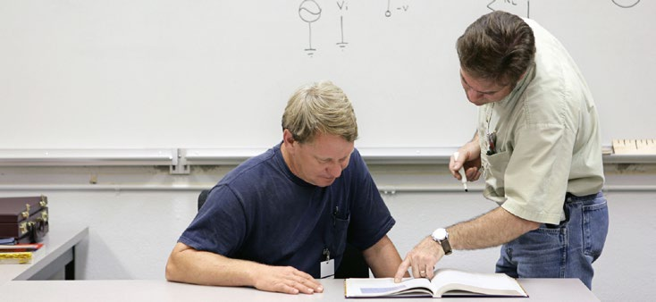

Abb. 2 Prozessschritte der Gefährdungsbeurteilung
Vor der Durchführung der Prüfungen hat der Unternehmer durch eine Gefährdungsbeurteilung mögliche Gefährdungen zu ermitteln sowie notwendige Schutzmaßnahmen festzulegen. Darüber hinaus müssen den Prüfpersonen geeignete, auf den Arbeitsplatz und die verwendeten Betriebsmittel bezogene, Anweisungen erteilt werden. Diese können
sein.
Muster für Gefährdungsbeurteilungen sowie für Arbeits- und/oder Betriebsanweisungen stehen im Internet unter www.dguv.de, Webcode 138299 im Downloadbereich zur Verfügung.
| Hinweis |
| Ohne eine Gefährdungsbeurteilung zur Prüftätigkeit darf nicht geprüft werden! |
Gefährdungen für Prüfpersonen entstehen hauptsächlich durch elektrische Körperdurchströmung infolge gefährlicher elektrischer Spannungen oder Verbrennungen durch Störlichtbögen, die während der Prüfung an elektrischen Anlagen oder Betriebsmitteln auftreten können.
Neben diesen elektrischen Gefährdungen können auch weitere Gefährdungen, z. B. durch thermische, mechanische oder physikalische Einwirkungen (Lärm, optische Strahlung, elektromagnetische Felder) entstehen.
Oft weisen Betriebsmittel Verschmutzungen auf, die ebenfalls zu Gefährdungen führen können, wie biologische oder chemische Gefährdungen.
Während der Prüfung muss darauf geachtet werden, dass sowohl die Prüfpersonen als auch Dritte nicht gefährdet werden. Es kann daher erforderlich sein, dass die betroffenen Bereiche durch unbefugte Personen nicht betreten werden können, z. B. durch Absperren, Aufsicht, Verlegen des Zeitpunkts der Prüfung.

Werden Personen ohne Ortskenntnisse mit Prüfungen beauftragt, sind sie in die Arbeitsstätte sowie in die elektrische Anlage und die Betriebsmittel einzuweisen.
Sollen die Prüfungen von einer Person allein ausgeführt werden, hat der Unternehmer für geeignete technische und organisatorische Maßnahmen zur Sicherstellung der Rettungskette zu sorgen (DGUV Information 204-007 "Handbuch zur Ersten Hilfe"; DGUV Information 204-022 "Erste Hilfe im Betrieb").
Weitergehende Hinweise zur Bewertung können der DGUV Information 212-139 "Notrufmöglichkeiten für allein arbeitende Personen" entnommen werden.
Gefährdungen der Prüfpersonen ergeben sich insbesondere durch:
Details zu Gefährdungen durch und von Prüfpersonen siehe Anhang F